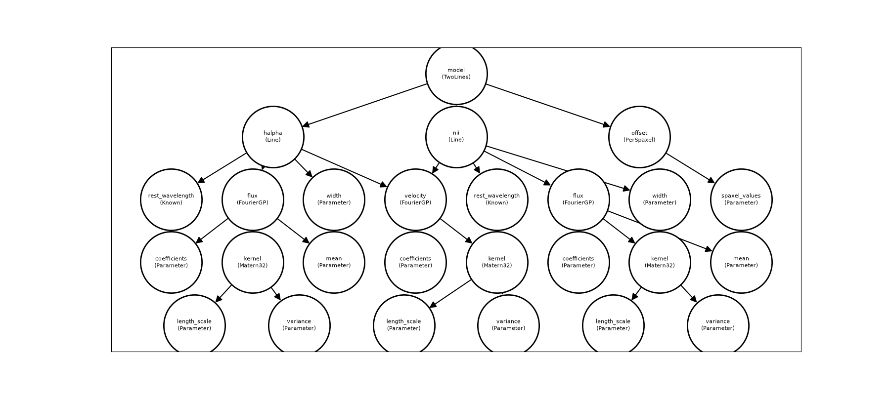

Building models¶
A spectracles model is an ordinary Equinox
module. You write a class that holds spectracles components (fields,
per-spaxel terms, parameters) and say in __call__ how they combine into a
prediction. build_model then turns it into a model you can inspect, change
and fit.
This page builds a small two-line model step by step. To fit it, see Priors and inference.
import equinox as eqx
import jax
import jax.numpy as jnp
import numpy as np
from jax import random
from spectracles import (
Domain,
FourierGP,
Known,
Matern32,
Parameter,
PerSpaxel,
SpatialDataGeneric,
build_model,
)
from spectracles.priors import LogNormal, Normal
jax.config.update("jax_enable_x64", True)
Where the data are¶
A model is evaluated at a set of points on the sky. SpatialDataGeneric holds
their positions x and y, and an index idx for each point (usually which
spaxel it is). Here the positions are offsets from the centre of the field, in
arcseconds:
N_SPAXELS = 400
xy = random.uniform(random.PRNGKey(0), (2, N_SPAXELS), minval=-600.0, maxval=600.0)
spaxels = SpatialDataGeneric(x=xy[0], y=xy[1], idx=jnp.arange(N_SPAXELS))
The positions can be anywhere: they don't need to lie on a grid. Use whatever units suit your data; length scales are then in the same units.
A Domain describes the region the data cover. Fields use it to work in your
units:
For LVM data, SpatialDataLVM also carries the tile, IFU and fibre of each
point. lvm_tools builds it for you
from the DRP output: its FitData.αδ_data is a SpatialDataLVM. See
LVM data. If your models need something else per point (an exposure number, say),
subclass SpatialData and add it:
from equinox import field
from spectracles import SpatialData
from spectracles.model.data import convert_to_flat_array
class ExposureData(SpatialData):
x: jax.Array = field(converter=convert_to_flat_array)
y: jax.Array = field(converter=convert_to_flat_array)
idx: jax.Array = field(converter=convert_to_flat_array)
exposure: jax.Array = field(converter=convert_to_flat_array)
Fields¶
A field is a quantity defined continuously across the sky, such as a line flux
or a velocity. FourierGP is a Gaussian-process field. It needs a kernel,
which sets how smooth the field is, and the domain:
field = FourierGP(
Matern32(
length_scale=Parameter(prior=LogNormal(40.0, 12.0)), # arcsec
variance=Parameter(prior=LogNormal(1.0, 0.5)),
),
domain=domain,
)
print(field.n_modes, field.padding)
The field is represented by Fourier modes on a box larger than the domain. The number of modes and the size of the margin are chosen for you, so that the field is accurate (to 0.1%) for every length scale its prior allows. Geometry and discretisation explains the choice, how to change it, and how to check a fit afterwards.
The kernels are Matern12, Matern32, Matern52 and SquaredExponential,
from roughest to smoothest. Each takes a length_scale and a variance.
A field can be evaluated at any points inside the domain, not just where the data are. That is how you make a dense map after fitting.
Means and positive fields¶
A field can have a mean, and a link that transforms it. A line flux, for
example, is positive, and often best modelled as the exponential of a GP:
flux = FourierGP(
Matern32(
length_scale=Parameter(prior=LogNormal(40.0, 12.0)),
variance=Parameter(prior=LogNormal(1.0, 0.5)),
),
domain=domain,
mean=Parameter(prior=Normal(0.0, 1.0)),
link="exp",
)
This field is exp(GP + mean). link="softplus" (with lower=) is another
positive option, which grows linearly rather than exponentially. The mean is a
parameter like any other, fitted with its own prior.
Per-spaxel terms¶
Some quantities don't vary continuously across the sky, such as a calibration
offset for each spaxel.
PerSpaxel has one value per spaxel, looked up by idx:
For LVM data there are also PerIFU, PerTile and PerIFUAndTile in
spectracles.model.spatial.
Your model¶
Now write the model itself. Here, two emission lines share one velocity field,
and each has its own flux field. The rest wavelengths are Known: constants
that are never fitted.
C_KMS = 299_792.458
class Line(eqx.Module):
rest_wavelength: Known
flux: FourierGP
velocity: FourierGP
width: Parameter
def __call__(self, wavelength, data):
centre = self.rest_wavelength.val * (1 + self.velocity(data) / C_KMS)
flux = self.flux(data)
σ = self.width.val
return flux / (σ * jnp.sqrt(2 * jnp.pi)) * jnp.exp(-0.5 * ((wavelength - centre) / σ) ** 2)
class TwoLines(eqx.Module):
halpha: Line
nii: Line
offset: PerSpaxel
def __call__(self, wavelength, data):
return self.halpha(wavelength, data) + self.nii(wavelength, data) + self.offset(data)
A parameter's value is .val. Any JAX code can go in __call__.
Building it, and sharing¶
build_model takes the class and its components. To share something between
components, pass the same object to both.
First make the components. There is one velocity field, velocity, and a
function that makes a new flux field each time it is called:
velocity = FourierGP(
Matern32(
length_scale=Parameter(prior=LogNormal(40.0, 12.0)),
variance=Parameter(prior=LogNormal(400.0, 200.0)), # (km/s)²
),
domain=domain,
)
def flux_field():
kernel = Matern32(
length_scale=Parameter(prior=LogNormal(40.0, 12.0)),
variance=Parameter(prior=LogNormal(1.0, 0.5)),
)
return FourierGP(kernel, domain=domain, mean=Parameter(prior=Normal(0.0, 1.0)), link="exp")
Then build the model. The same velocity object goes to both lines, so the
model has one velocity field, not two. Each line gets its own flux field:
halpha = Line(
rest_wavelength=Known(6562.8),
flux=flux_field(),
velocity=velocity, # shared
width=Parameter(prior=LogNormal(1.0, 0.2)),
)
nii = Line(
rest_wavelength=Known(6583.5),
flux=flux_field(),
velocity=velocity, # shared
width=Parameter(prior=LogNormal(1.0, 0.2)),
)
offset = PerSpaxel(N_SPAXELS, Parameter(dims=N_SPAXELS, prior=Normal(0.0, 0.01)))
model = build_model(TwoLines, halpha=halpha, nii=nii, offset=offset)
A shared parameter is fitted once, with one prior. Two separate parameters that
happen to have the same prior, like the two widths here, are fitted
independently.
Fields built from other fields¶
Two common constructions have their own classes. FieldFromRatio writes one
field as another times a ratio, which is useful when the ratio is the quantity
of interest. The ratio is modelled through its base-10 log, and the mean of
that field is the typical log ratio:
from spectracles import FieldFromRatio, FieldPlusScatter
log10_ratio = FourierGP(
Matern32(
length_scale=Parameter(prior=LogNormal(60.0, 20.0)),
variance=Parameter(prior=LogNormal(0.1, 0.05)),
),
domain=domain,
mean=Parameter(prior=Normal(-0.5, 0.3)),
)
nii_flux = FieldFromRatio(base=halpha.flux, log10_ratio=log10_ratio) # Hα flux × ratio
FieldPlusScatter(field, scatter) adds a separate value for each spaxel to a
field, for a quantity with some spaxel-to-spaxel scatter that a continuous
field can't follow:
scattered = FieldPlusScatter(
field=flux_field(),
scatter=PerSpaxel(N_SPAXELS, Parameter(dims=N_SPAXELS, prior=Normal(0.0, 0.05))),
)
For anything else, such as the sum of two fields, write the arithmetic in your
model's __call__.
Looking at the model¶
get_parameter_summary lists every parameter by its path, with its shape,
prior and whether it is free. A shared parameter appears at every location it
is used, with "Shared from" naming the one place it is stored:
print_model_tree(show_sharing=True) prints the structure, and
plot_model_graph() draws it, with an arrow from each component to what it
uses:
import matplotlib.pyplot as plt
fig, ax = plt.subplots(figsize=(18, 8))
model.plot_model_graph(ax=ax, show=False)
fig.savefig("model_graph.png")

Both lines point to the same velocity node: it is one field.
Evaluating¶
Call the model with a wavelength and the data. To get a spectrum at every
spaxel, map over wavelengths with jax.vmap:
wavelengths = jnp.linspace(6550.0, 6600.0, 200)
spectra = jax.vmap(model, in_axes=(0, None))(wavelengths, spaxels)
print(spectra.shape) # (wavelengths, spaxels)
To call a single part of the model, such as the velocity field on a dense
grid, use for_evaluation() first. It gives a copy in which shared values are
filled in everywhere:
grid = domain.grid((100, 100)) # 100 × 100 points over the whole domain
velocity_map = model.for_evaluation().nii.velocity(grid).reshape(100, 100)
domain.grid((n, m), padding=...) can also reach past the domain, as far as a
field's own padding: domain.grid((100, 100), padding=velocity.padding).
(Without for_evaluation(), model.nii.velocity would fail: the shared field
lives at halpha.velocity, and nii only holds a reference to it.) Use the
copy for evaluation only; keep the original for fitting.
Setting and fixing values¶
set takes a dict from path to value (an array of the parameter's shape), and
returns a new model:
set_fixed_status fixes or frees parameters by path. A fixed parameter keeps
its value and isn't fitted:
Priors and fixing can also be set by glob pattern with with_priors, e.g.
model.with_priors({"*.width": LogNormal(1.0, 0.2), "offset.*": "fixed"}).
Free, fixed and Known explains the
difference between the three kinds of parameter.
Saving and loading¶
from pathlib import Path
from spectracles import load_model, save_model
save_model(model, Path("two_lines"))
model = load_model(Path("two_lines"))
A saved file holds the whole model, including the code of your classes, so it only loads with the Python and package versions that wrote it. This is likely to change (see the roadmap).
Built-in spectral components¶
For simple cases you don't need to write the line yourself:
Gaussian(A, λ0, σ) is a Gaussian line whose amplitude, centre and width are
each a spatial model, Constant(c) is a flat continuum, and
WindowConstant(c, λ_min, λ_max) is flat within a wavelength window. See the
API reference.
Current limitations¶
- Parameters must be attributes, not items in a list, tuple or dict. Putting one in a container raises an error; support is planned for 1.1.
MultiFourierGP(several fields evaluated together) is disabled until 1.1.- Fields are stationary: the kernel is the same everywhere on the sky.
- Domains are square. An elongated footprint gets a square box.
- Choosing modes for you needs the kernel's continuous form
(
spectral_densityandcovariance), which the built-in kernels have. For other kernels, given_modes(andpadding).